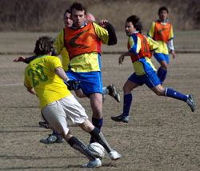

|
Misato, Sun 12th February. An informed neutral contemplating this fixture might have predicted the decisive protagonists would be the talented and physically intimidating Shane no. 11, or the Clash debutante libero Nori. While both acquitted themselves with distinction, the decisive factor came from an unexpected quarter – the elements. Gale-force winds swept across the open expanses of Misato forcing both sides to adjust their tactics towards the conditions rather than each other. Flying in the face of received wisdom, each half was dominated by the team playing into the wind.
Shane’s mid-table position belied their potential as champions of this league. With a few games-in-hand on league-leaders Kanto Celts, Shane knew three points here would set them up nicely for a late challenge at the title. Clash, meanwhile, really needed to stop drawing and start winning to climb to respectability in the standings. Shane won the toss and bizarrely (or so it seemed at the time) opted to play into the wind. That decision proceeded to exhibit its wisdom as the game panned out; the wind was so strong that Clash had no way of judging any forward ball that left the ground. A free kick from Sid took a vicious wind-assisted swerve towards the near post, drawing an astounding save from the Shane keeper. This proved to be an exceptional moment of accuracy; Clash shots from in and around the box were woefully off-target. On the other hand, Shane had no option but to keep the ball on the ground and so made use of the give-and-go to create a few openings. The only goal of the half resulted from just such a move. A throw-in was taken just inside the Clash half, touched out wide and then received again inside by the annoyingly gifted Shane No.11, and then a shot rebounded kindly off Clash keeper Elliot to the in-rushing Shane forward who slotted coolly into the unguarded goal.
After half-time, the roles were reversed. It was Clash’s turn to keep the ball on the ground and they used this to dominate the half in terms of possession and chances. Mick and Andy showed some deft touches to carve out an opening, but Andy’s hasty shot flew well wide. Sid was finding space in the box, and full-back Alec was getting forward to provide options, but the final ball and accuracy were sadly lacking for Clash in this fixture. Like Clash in the first half, Shane were unable to tame the wind to their advantage, and a series of offside decisions coupled with Nori and Ian’s central defensive abilities seemed to disrupt their shape and temperament. Clash have made a reputation for rescuing draws from the clutches of defeat this season, but it was not to be on this occasion. This correspondent predicted that Clash might be found out later in the season by opponents above them in the league, and so it may have proved in this fixture. But with the wind proving a great leveler, who can say what this result exhibits. Shane will use it to propel themselves into the championship reckoning. Clash are now playing for pride and a higher finish than last season. This is a game that has defined the season for both teams.
Man of the match: Shane No. 11 and Clash Nori
Match Report: Count Zero.
|